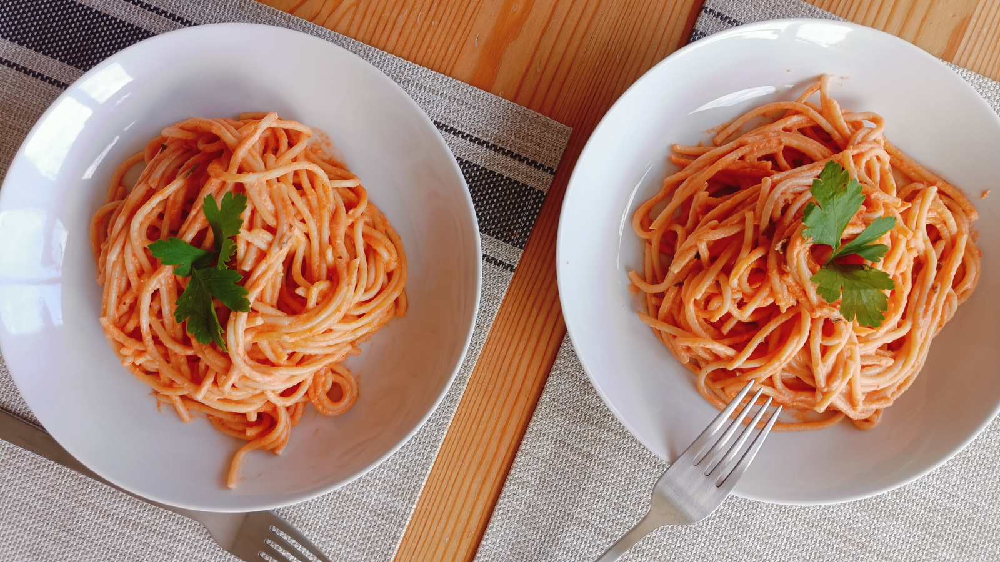

Pasta Gaspar
- Preparación: 20 min
- Cocción: 30 min
- Porciones: 5 - 6 porciones
INGREDIENTES
COCCIÓN DE LA PASTA
- 250 g de pasta larga (spaghetti o linguine)
- 1 hoja de laurel
- 1 diente de ajo entero
- 1 trozo de cebolla de aproximadamente 50 g (sin picar)
- ½ cucharadita de sal
SALSA
- 500 - 600 g de tomates frescos cortados en cubos
- 90 - 100 g de cebolla cortada en cubos
- 1 diente de ajo picado
- sal y pimienta al gusto
COCCIÓN FINAL
- 3 cucharadas (45 g) de aceite de oliva
- 1 trozo de cebolla de aproximadamente 20 g
- 2 cucharadas de perejil fresco picado
- ½ cucharadita de tomillo deshidratado (opcional)
- 250 ml de crema para cocinar (puede ser de soja o de avena)
- queso rallado (opcional)
DESCRIPCIÓN
Esta maravillosa receta fue un regalo de la vida. Las notas originales, que logré transcribir a mi primer cuaderno de recetas, fueron escritas por la mano de mi hermanita de la vida, Leti y su madre, María Luisa Gaspar. La preparamos por primera y única vez juntas Leti y yo, en un día lejano cuando aún las dos estudiábamos Física, sin saber que en realidad estabamos cocinando un montón de sueños que compartimos aún estos dias. Te quiero Migs.
INSTRUCCIONES
- Para cocer la pasta, seguir las instrucciones del empaque y agregar al agua de cocción la hoja de laurel entera, un diente de ajo entero, un trozo grande de cebolla y, cuando rompa a hervir, media cucharadita de sal. Pasado el tiempo de cocción indicado en el paquete, sacar el ajo, la cebolla y la hoja de laurel y reservar una taza del agua de la cocción. Finalmente escurrir la pasta y reservar.
- Para preparar la salsa, moler los tomates, 100 g de cebolla, otro diente de ajo, y sal y pimienta al gusto hasta obtener una textura homogénea. Además de estos ingredientes, se puede añadir el ajo y la cebolla del agua de la cocción. Reservar.
- En una sartén honda o en una olla grande calentar el aceite de oliva. Cuando el aceite se caliente añadir el último trozo de cebolla, dejarlo dorar sin que se queme y retirarlo del aceite. Este trozo ya no se utilizará por lo que podemos usarlo en alguna otra receta o comerlo directamente con sal y limón 😜. Seguir calentando el aceite a fuego medio.
- Agregar la salsa de tomate al aceite caliente y añadir el perejil picado y tomillo. Dejar cocinar aproximadamente 20 minutos o hasta que la salsa cambie de color. Agregar la crema y dejar cocinando otros 5 minutos, hasta que todo se caliente e incorpore bien.
- Volcar la pasta cocida sobre la salsa y remover suavemente hasta que la salsa cubra la pasta de manera uniforme. Se puede añadir queso por encima y mezclar un poco más para que éste también quede bien repartido. Servir bien caliente.
Notas
- En la receta original de María Luisa, se utiliza mantequilla en lugar de aceite de olivo, en la misma cantidad. En ese caso hay que dejarla derretir y seguir exactamente el mismo procedimiento a partir del paso 3.
- En la receta original también el queso tiene un papel de gran importancia, aportando más proteina al plato. Dependerá de cada gusto la elección del queso, pero queda especialmente bueno con mozzarella o incluso con queso fresco.